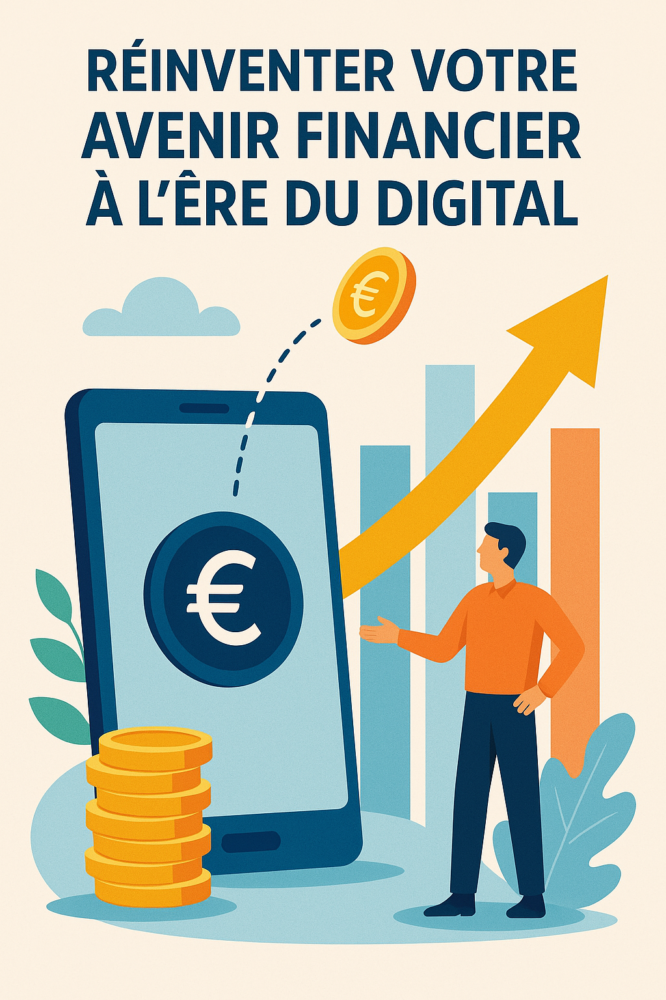
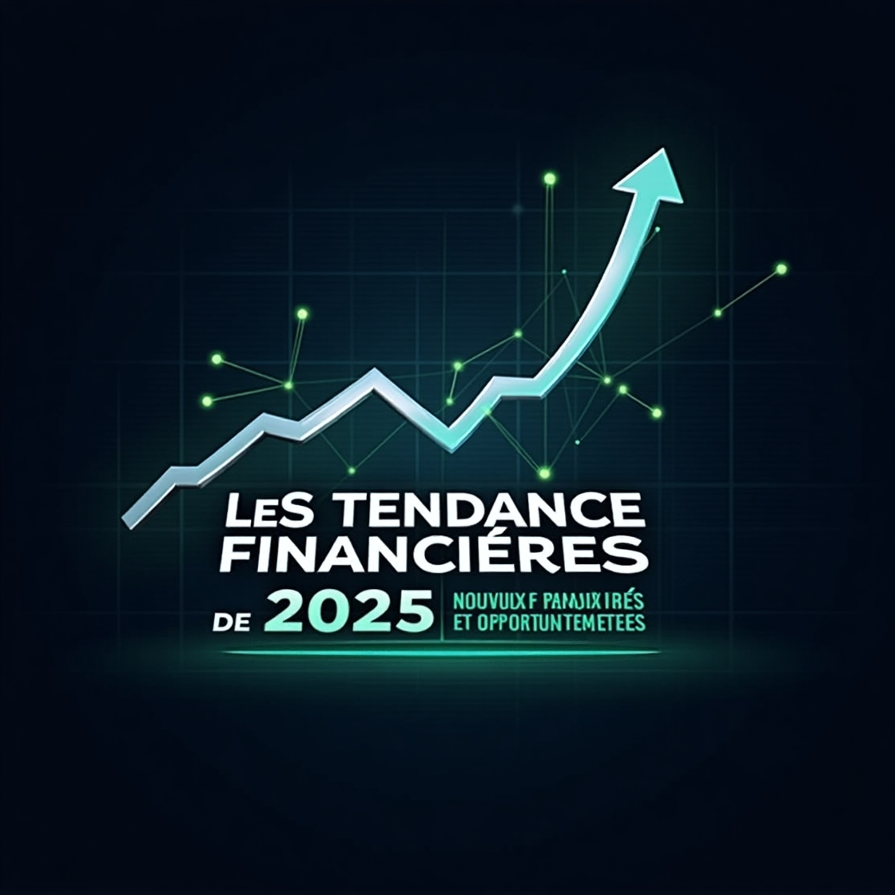
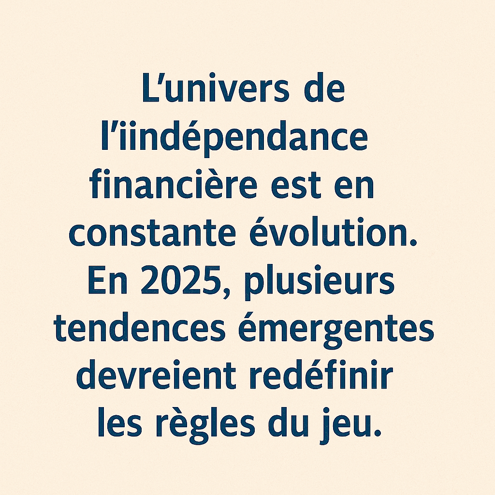

Devenir Indépendant Financièrement en 2025 : Le Guide ultime pour une liberté économique personnalisée
Introduction

À l'aube de 2025, la quête de l'indépendance financière est bien plus qu'une simple aspiration : c'est un impératif pour ceux qui souhaitent s'affranchir des contraintes d'un système économique en perpétuelle mutation. Dans un contexte marqué par la digitalisation accélérée, la montée en puissance de la blockchain et l'essor des technologies disruptives, l'approche classique de la finance personnelle se trouve remise en question. Ce guide se propose de vous accompagner pas à pas pour transformer votre relation à l'argent, repenser vos investissements et construire un futur où la liberté économique n'est plus un rêve, mais une réalité concrète et accessible.
Au fil des décennies, les paradigmes traditionnels ont évolué, et les méthodes pour accumuler et faire fructifier son capital ne se limitent plus aux seuls comptes d'épargne ou aux investissements en bourse. Aujourd'hui, la diversité des outils disponibles – des cryptomonnaies à l'immobilier fractionné, en passant par l'entrepreneuriat digital – offre des opportunités inédites. Cependant, pour tirer pleinement parti de ces possibilités, il faut avant tout comprendre les fondamentaux de l'indépendance financière et savoir adapter ses stratégies aux particularités de notre ère numérique.
Ce guide complet, fruit d'une analyse approfondie basée sur des recherches récentes et des sources spécialisées telles que Les Échos et BFM Business, vous propose une feuille de route personnalisée. Nous aborderons les principes de base, explorerons les tendances majeures qui façonnent le marché en 2025 et détaillerons des stratégies adaptées à différents profils – étudiants, salariés, entrepreneurs et investisseurs aguerris. Notre objectif est de vous fournir des clés concrètes pour bâtir une indépendance financière durable et ainsi reprendre le contrôle de votre avenir.
I. Les Fondations d'une Autonomie Financière Durable
1. Comprendre l'Indépendance Financière
L'indépendance financière se définit par la capacité de générer des revenus passifs suffisants pour couvrir l'ensemble de ses dépenses, permettant ainsi de se libérer de la nécessité d'un emploi salarié traditionnel. Ce concept, qui a évolué au fil des années, repose sur trois piliers fondamentaux :
- La maîtrise de ses dépenses : Il s'agit de prendre conscience de ses habitudes de consommation, de les optimiser et de mettre en place une gestion budgétaire rigoureuse. L'objectif est de dégager une marge de manœuvre financière permettant d'investir dans des projets porteurs.
- La diversification des sources de revenus : Ne jamais dépendre d'une seule source de revenus est essentiel pour sécuriser son avenir. Que ce soit via un salaire, des investissements ou des activités annexes, la diversification permet de réduire les risques en cas de fluctuation d'un secteur.
- L'investissement stratégique : Faire travailler son argent de manière intelligente et adaptée à son profil de risque est la clé pour transformer ses économies en un capital productif. Cela passe par l'identification des opportunités, la compréhension des marchés et l'adoption d'une vision à long terme.
2. Les Bénéfices d'Atteindre l'Indépendance Financière
Atteindre l'indépendance financière présente de nombreux avantages, tant sur le plan personnel que professionnel :
- Liberté de choix : Vous n'êtes plus obligé de travailler uniquement pour payer vos factures. Cette autonomie vous permet de choisir des projets qui vous passionnent, d'explorer des secteurs innovants ou même de vous lancer dans des initiatives artistiques et sociales.
- Sécurité face aux imprévus : En vous constituant un socle financier solide, vous êtes mieux armé pour faire face aux crises économiques, aux changements de marché ou aux imprévus de la vie quotidienne.
- Capacité d'innovation et de créativité : Libéré des contraintes d'un emploi fixe, vous pouvez investir du temps et des ressources dans l'apprentissage de nouvelles compétences, l'exploration de nouvelles technologies et la création de projets innovants.
- Flexibilité et qualité de vie : En maîtrisant vos revenus passifs, vous pouvez réorganiser votre quotidien selon vos propres priorités, qu'il s'agisse de voyager, de passer plus de temps en famille ou de vous consacrer à des hobbies enrichissants.
3. Les Piliers Essentiels pour Bâtir Votre Autonomie Financière
Pour réussir votre parcours vers l'indépendance financière, il est crucial de poser des bases solides. Voici quelques axes de réflexion :
A. La Discipline Budgétaire
L'établissement d'un budget précis est le point de départ de toute stratégie financière réussie. Cela implique de suivre vos revenus, d'identifier vos dépenses non essentielles et de mettre en place des mesures d'économie. De nombreux outils numériques et applications mobiles, comme Bankin’ ou YNAB, peuvent vous aider dans cette tâche en offrant des analyses détaillées de vos flux financiers.
B. L'Épargne et l'Investissement Régulier
L'épargne doit être envisagée non pas comme une simple réserve d'argent, mais comme une ressource à investir pour qu'elle se transforme en capital productif. L'approche du "payez-vous d'abord" est une méthode éprouvée pour s'assurer que chaque mois, une part de vos revenus est destinée à l'investissement. Que vous choisissiez de placer cet argent en bourse, dans l'immobilier ou dans des cryptomonnaies, l'important est de rester constant et de profiter de l'effet cumulatif des intérêts composés.
C. Le Développement Continu de Vos Compétences
Dans un monde en constante évolution, la formation continue est indispensable. Investir dans votre éducation, que ce soit par le biais de MOOC, de certifications professionnelles ou de conférences spécialisées, augmente votre valeur sur le marché et ouvre la porte à de nouvelles opportunités de revenus. La capacité à s'adapter et à apprendre de nouvelles compétences est l'un des atouts majeurs pour réussir financièrement à long terme.
II. Les Tendances Financières de 2025 : Nouveaux Paradigmes et Opportunités

1. L'Ère des Cryptomonnaies et de la Finance Décentralisée (DeFi)
A. L'Essor des Cryptomonnaies
Depuis l'avènement du Bitcoin, le marché des cryptomonnaies a connu une expansion phénoménale. En 2025, les cryptos ne sont plus seulement un outil spéculatif, mais un véritable vecteur de transformation économique. Le staking et le yield farming, par exemple, permettent de générer des revenus passifs en mettant à profit vos avoirs numériques sur des plateformes spécialisées. De plus, les cryptomonnaies offrent une alternative aux systèmes bancaires traditionnels, souvent jugés rigides et coûteux.
B. La Tokenisation des Actifs
La tokenisation permet de transformer des actifs réels – qu'il s'agisse d'œuvres d'art, de biens immobiliers ou même de parts d'entreprise – en jetons numériques négociables. Cette innovation rend les investissements auparavant réservés à une élite plus accessibles au grand public. Grâce à cette technologie, il est désormais possible d'acheter une fraction d'un bien immobilier ou d'une œuvre d'art, diversifiant ainsi vos sources de revenus et réduisant les barrières à l'entrée.
C. Plateformes DeFi : Réinventer les Services Financiers
Les plateformes de finance décentralisée offrent des services de prêts, d'emprunts et de trading sans passer par les institutions traditionnelles. Ces systèmes reposent sur des contrats intelligents et garantissent une transparence totale. Ils représentent une véritable révolution dans le secteur financier, en particulier pour ceux qui cherchent à maximiser leurs rendements tout en évitant les coûts élevés des intermédiaires financiers.
2. La Bourse et les Investissements Traditionnels Revisités
1. La Puissance des Dividendes et des ETF
Investir dans des actions à dividendes reste une méthode éprouvée pour générer un revenu passif régulier. Les ETF (Exchange-Traded Funds) offrent quant à eux une diversification instantanée en regroupant plusieurs titres dans un seul produit. En combinant ces deux approches, vous pouvez bénéficier à la fois de la stabilité des dividendes et de la croissance globale du marché.
2. Les Opportunités dans les Startups et les Technologies de Rupture
Le monde des startups regorge de potentiels, notamment dans des secteurs comme l'intelligence artificielle, la biotechnologie ou encore les énergies renouvelables. Bien que ces investissements comportent un niveau de risque plus élevé, ils offrent également des perspectives de rendement exceptionnelles. S'informer régulièrement via des sources spécialisées et suivre les indicateurs économiques peut vous aider à repérer les opportunités avant qu'elles ne deviennent grand public.
3. Stratégies de Trading et Analyse Technique
Pour les investisseurs plus aguerris, le trading actif – notamment via l'analyse technique – permet de profiter des fluctuations du marché. Des logiciels et des algorithmes avancés sont désormais disponibles pour aider à la prise de décision, rendant cette approche plus accessible même aux non-spécialistes. Toutefois, il est essentiel de bien comprendre les risques associés et de ne consacrer qu'une partie de son capital à cette stratégie.
3. L'Immobilier à l'Ère du Numérique
1. L'Immobilier Locatif : Un Pilier Indémodable
L'investissement immobilier demeure une valeur refuge pour de nombreux investisseurs. En 2025, la tendance se confirme avec l'essor des locations de courte durée et de la colocation, rendues possibles grâce aux plateformes en ligne. Ces modèles permettent de maximiser la rentabilité d'un bien tout en adaptant l'offre aux besoins spécifiques d'une clientèle de plus en plus mobile et internationale.
2. L'Immobilier Fractionné et la Tokenisation
La tokenisation de l'immobilier a transformé le marché en rendant possible l'achat de parts de biens immobiliers. Cela offre une nouvelle dimension à l'investissement en permettant une diversification plus fine et en ouvrant l'accès aux marchés haut de gamme à ceux disposant d'un capital moindre. Ce modèle est particulièrement adapté aux jeunes investisseurs souhaitant démarrer sans mobiliser des sommes importantes.
3. Innovations dans la Gestion Immobilière
Les technologies de l'information, comme l'intelligence artificielle et les plateformes de gestion en ligne, révolutionnent la manière dont les biens immobiliers sont administrés. Des outils permettant d'optimiser les loyers, de gérer les locataires et de prévoir les entretiens améliorent considérablement la rentabilité et la sécurité des investissements.
4. Le Développement des Side Hustles et de l'Entrepreneuriat Numérique
A. L'Ère de l'Entrepreneuriat Digital
Le numérique offre des possibilités infinies pour générer des revenus additionnels. Que ce soit à travers le lancement d'un e-commerce, la création de contenus sur YouTube ou l'exploitation de réseaux sociaux pour monétiser votre expertise, les opportunités ne manquent pas. La clé réside dans la capacité à identifier une niche de marché et à créer une communauté engagée autour de votre passion.
B. Le Freelancing et les Services en Ligne
Le marché du freelancing continue de croître de manière exponentielle. De nombreux professionnels se tournent vers des plateformes telles que Upwork, Fiverr ou Malt pour offrir leurs compétences en design, en rédaction, en programmation ou en consulting. Ce mode de travail flexible permet non seulement de diversifier ses sources de revenus, mais également de développer son réseau professionnel à l'international.
C. La Monétisation de la Création de Contenu
Créer du contenu de qualité, que ce soit par le biais d'un blog, d'un podcast ou d'une chaîne YouTube, peut se transformer en une source de revenus durable. En combinant publicité, sponsoring et affiliation, il est possible de générer des revenus passifs tout en partageant vos connaissances et votre passion avec une large audience. De plus, la personnalisation de votre contenu et l'interaction avec votre communauté renforcent votre crédibilité et fidélisent vos lecteurs ou spectateurs.
III. Stratégies Personnalisées pour Divers Profils d'Investisseurs
L'indépendance financière ne s'impose pas de manière uniforme à tous. Chaque profil – étudiant, salarié, entrepreneur ou investisseur expérimenté – possède des contraintes et des opportunités qui lui sont propres. Voici des stratégies détaillées adaptées à chacun :
1. Pour les Étudiants et Jeunes Actifs
Les étudiants, souvent limités par des ressources financières restreintes, peuvent dès le départ poser les bases de leur avenir financier :
- Optimisation du Budget Étudiant : Apprenez à maîtriser vos dépenses en identifiant vos besoins essentiels et en éliminant les achats impulsifs. L'utilisation d'applications mobiles dédiées permet d'avoir une vision claire de votre situation financière.
- Formation Continue et Acquisition de Compétences : Profitez des nombreux MOOC gratuits et des ressources en ligne pour renforcer vos connaissances en finance personnelle. La formation continue est un investissement en soi qui ouvre des portes sur le marché du travail.
- Expérimentation via le Freelancing : Devenir freelance sur des plateformes comme Upwork ou Fiverr peut vous permettre de gagner de l'argent tout en acquérant une expérience précieuse et en développant un réseau professionnel solide.
- Investissements à Petite Échelle : Même avec un budget limité, il est possible de commencer à investir dans des ETF ou des cryptomonnaies via des plateformes adaptées aux petits portefeuilles. Cela permet d'appréhender le marché en temps réel sans prendre de risques excessifs.
2. Pour les Salariés et Professionnels
Pour ceux qui disposent déjà d'un revenu stable, l'objectif est de faire croître ce capital de manière intelligente et diversifiée :
- Planification Automatisée de l'Investissement : Mettez en place des systèmes d'investissement automatique, comme le Dollar Cost Averaging, afin d'investir régulièrement et de lisser les effets des fluctuations du marché.
- Création de Sources de Revenus Complémentaires : Identifiez des opportunités pour générer des revenus additionnels, que ce soit par le lancement d'un side-hustle, la rédaction de formations en ligne ou la mise en place de services de consulting adaptés à vos compétences professionnelles.
- Diversification du Portefeuille : En plus de l'investissement en bourse, pensez à diversifier vos actifs en incluant l'immobilier locatif, les SCPI et même des placements dans des cryptomonnaies soigneusement sélectionnées.
- Optimisation Fiscale : Profitez des dispositifs fiscaux avantageux offerts dans votre pays, tels que les plans d'épargne entreprise ou les réductions d'impôts liées aux investissements dans des secteurs innovants.
3. Pour les Entrepreneurs et Investisseurs Expérimentés
Les entrepreneurs, avec leur flexibilité et leur appétit pour le risque, peuvent adopter des stratégies plus audacieuses :
- Automatisation et Digitalisation de l'Entreprise : Utilisez des outils technologiques pour automatiser la gestion de vos opérations et libérer du temps, que vous pourrez consacrer à des projets d'investissement.
- Investissements dans des Secteurs Innovants : Diversifiez vos investissements en explorant des secteurs de rupture tels que la fintech, la biotechnologie, ou les énergies renouvelables. Cette approche vous permet de bénéficier des tendances à fort potentiel de croissance.
- Partenariats Stratégiques et Réseautage : Rejoignez des groupes de mastermind, participez à des conférences internationales et nouez des partenariats stratégiques. Ces échanges vous offriront des perspectives nouvelles et des opportunités d'investissement exclusives.
- Gestion Active du Portefeuille : Pour les investisseurs aguerris, il peut être pertinent de consacrer une partie du capital à des stratégies de trading actif, en combinant analyse technique, utilisation d'algorithmes et suivi des indicateurs de marché en temps réel.
IV. Techniques Avancées de Gestion de Portefeuille et Optimisation des Investissements
1. Investissement Passif versus Investissement Actif
La décision entre une approche passive et une gestion active du portefeuille dépend de votre profil, de vos objectifs et du temps que vous souhaitez consacrer à la gestion de vos actifs.
- Investissement Passif : Investir dans des ETF ou des fonds indiciels permet de suivre la performance globale du marché sans nécessiter une gestion quotidienne. Cette méthode, souvent plébiscitée pour sa simplicité et son efficacité à long terme, est idéale pour ceux qui préfèrent adopter une stratégie « buy and hold ».
- Investissement Actif : Pour les investisseurs passionnés par l'analyse de marché et souhaitant exploiter les fluctuations, le trading actif offre la possibilité de maximiser les rendements. Cette stratégie nécessite toutefois une surveillance constante, une compréhension fine des outils d'analyse technique et une bonne gestion des risques.
2. Gestion des Risques : La Clé de la Pérennité
Une bonne gestion des risques est indispensable pour toute stratégie d'investissement :
- Diversification Multi-Sectorielle : Répartir son capital sur plusieurs types d'actifs – actions, immobilier, cryptomonnaies, entreprises privées – permet de limiter l'impact des fluctuations d'un secteur particulier.
- Allocation Stratégique du Capital : Définissez un pourcentage de votre capital à investir dans chaque catégorie, en fonction de votre tolérance au risque. Une approche équilibrée vous aidera à sécuriser vos investissements tout en maximisant le potentiel de croissance.
- Utilisation d'Outils de Suivi et d'Alerte : Recourez à des logiciels de gestion de portefeuille et des applications de monitoring en temps réel pour adapter rapidement votre stratégie en fonction de l'évolution du marché.
3. Techniques d'Optimisation et d'Automatisation
Les nouvelles technologies offrent aujourd'hui des outils puissants pour optimiser la gestion de vos investissements :
- Algorithmes et Intelligence Artificielle : L'utilisation d'algorithmes sophistiqués permet d'analyser en temps réel des millions de données de marché, afin d'identifier les opportunités d'investissement et de minimiser les risques. Des plateformes innovantes proposent désormais des conseils basés sur l'intelligence artificielle.
- Automatisation des Investissements : Grâce à des systèmes d'investissement automatique, vous pouvez mettre en place des stratégies telles que le Dollar Cost Averaging, garantissant une gestion régulière et disciplinée de votre capital.
- Suivi Personnalisé : Configurez des tableaux de bord personnalisés pour suivre vos indicateurs clés de performance et ajuster vos portefeuilles en fonction de vos objectifs financiers.
V. Ressources et Outils pour Accompagner Votre Parcours
Pour réussir votre chemin vers l'indépendance financière, il est crucial de s'entourer des bons outils et ressources. Voici une sélection d'applications, plateformes et sources d'information indispensables :
1. Applications de Gestion Budgétaire
- YNAB (You Need A Budget) : Permet de créer et suivre un budget détaillé, d'identifier les dépenses superflues et de planifier vos économies.
- Bankin’ : Une application mobile qui centralise vos comptes bancaires et vous fournit des analyses détaillées de vos dépenses.
2. Plateformes d'Investissement
- eToro et Degiro : Ces courtiers en ligne offrent un accès simplifié aux marchés boursiers et aux cryptomonnaies, avec des interfaces intuitives et des outils de suivi performants.
- Coinbase et Binance : Pour ceux qui souhaitent investir dans les cryptomonnaies, ces plateformes offrent des solutions sécurisées et des options variées pour le trading et le staking.
3. Formations et Communautés en Ligne
- MOOCs et Webinaires : Des plateformes comme Coursera, Udemy ou encore LinkedIn Learning proposent des cours sur la finance personnelle, l'investissement et la blockchain.
- Forums et Groupes Spécialisés : Rejoindre des communautés sur Reddit, des groupes Facebook ou des forums spécialisés vous permettra d'échanger avec d'autres passionnés, de partager vos expériences et d'apprendre des stratégies éprouvées.
4. Sources d'Information et Blogs Spécialisés
- Les Échos et BFM Business : Ces sources vous tiennent informé des dernières tendances économiques et financières, des analyses de marché et des études de cas inspirantes.
- Blogs de Fintech et Investissement : De nombreux experts partagent régulièrement leurs insights et conseils sur des blogs dédiés à l'indépendance financière et aux nouvelles technologies.
VI. Témoignages Inspirants et Études de Cas : Des Parcours Réels Vers la Liberté Financière
Pour illustrer concrètement les stratégies évoquées, voici quelques exemples détaillés de personnes ayant réussi à transformer leur vie financière.
1. L'Entrepreneur Digital : Le Parcours de Marc
Marc, 35 ans, est un entrepreneur digital qui a su exploiter le potentiel du blogging et de la vidéo en ligne pour créer un écosystème de revenus diversifiés. Dès ses débuts, Marc a investi dans l'apprentissage des techniques de SEO et de monétisation de contenu. Il a ainsi lancé un blog spécialisé dans les innovations technologiques et a complété son offre par une chaîne YouTube où il partageait des tutoriels et analyses de marché.
- Stratégie et Outils Utilisés : Marc a mis en place un système de revenus basé sur l'affiliation, la publicité et la vente de formations en ligne. Il utilise des outils d'analyse de trafic et des plateformes de marketing automation pour optimiser ses contenus et maximiser son audience.
- Résultats : En moins de 5 ans, il est parvenu à générer un revenu mensuel de plus de 12 000 $, tout en continuant à développer sa communauté et à diversifier ses investissements, notamment dans des cryptomonnaies prometteuses.
2. La Pionnière de la Cryptosphère : L'Histoire de Sophie
Sophie, 29 ans, a débuté son aventure dans le monde des cryptomonnaies avec un investissement modeste. Grâce à une approche méthodique basée sur le staking et le yield farming, elle a su transformer son capital initial en une source de revenus significative.
- Approche et Méthodologie : Sophie a étudié les mécanismes des plateformes DeFi et a choisi de diversifier ses avoirs en investissant dans plusieurs cryptomonnaies. Elle a également participé à des formations en ligne et consulté des experts pour optimiser sa stratégie.
- Impact et Perspectives : Aujourd'hui, son portefeuille est évalué à plusieurs centaines de milliers de dollars, et elle partage régulièrement ses analyses sur des blogs spécialisés, inspirant ainsi une nouvelle génération d'investisseuses dans le domaine des technologies blockchain.
3. Le Couple Innovant dans l'Immobilier : Claire et Antoine
Claire et Antoine, un couple dans la quarantaine, ont su transformer un projet immobilier en une véritable success story. Ils ont investi dans plusieurs biens destinés à la location courte durée et ont utilisé des outils d'analyse en ligne pour optimiser la gestion de leurs appartements.
- Stratégie Adoptée : En combinant l'investissement traditionnel dans l'immobilier avec les nouvelles méthodes de gestion numérique (applications de gestion locative, plateformes de réservation en ligne), ils ont réussi à augmenter la rentabilité de chaque bien.
- Résultats et Vision d'Avenir : Leur patrimoine immobilier s'est considérablement valorisé en moins de 7 ans, leur permettant non seulement d'atteindre l'indépendance financière, mais aussi de prévoir de nouvelles acquisitions dans des zones à fort potentiel de croissance.
VII. Les Perspectives Futures et les Innovations à Surveiller

À l'approche de la seconde moitié des années 2020, plusieurs innovations pourraient transformer encore davantage la manière dont nous concevons l'indépendance financière :
1. L'Évolution des Technologies Blockchain
La blockchain continue de se développer et d'ouvrir de nouvelles voies pour les transactions financières sécurisées et transparentes. Des innovations telles que les contrats intelligents évolués, la tokenisation d'actifs complexes et l'intégration de l'intelligence artificielle dans la gestion des portefeuilles devraient apparaître et rendre le système encore plus accessible et sécurisé.
2. La Fusion entre l'Immobilier et le Numérique
Le concept de « smart real estate » se développe avec l'intégration de la technologie IoT (Internet des Objets) et de l'analyse de données en temps réel pour optimiser la gestion des biens immobiliers. Cela pourrait révolutionner le secteur en permettant une maintenance prédictive, une gestion plus fine des loyers et une amélioration de l'expérience locative.
3. La Personnalisation Extrême des Services Financiers
À mesure que les technologies de l'information progressent, les services financiers deviendront de plus en plus personnalisés. Les conseillers virtuels, utilisant l'intelligence artificielle et l'analyse comportementale, pourront offrir des recommandations ultra-ciblées, adaptées à chaque profil d'investisseur et à chaque situation personnelle.
4. L'Impact de l'Économie Collaborative
Le développement de l'économie collaborative et des plateformes de partage continuera de modifier notre approche du travail et de la gestion financière. Des modèles de revenus partagés, basés sur la co-création de valeur et le mutualisme, devraient se multiplier, offrant de nouvelles sources de revenus et une plus grande flexibilité dans l'organisation du travail.
VIII. Recommandations Pratiques et Conseils d'Experts
Pour clore ce guide, voici une série de recommandations pratiques issues de l'analyse des experts et des tendances observées sur le terrain :
1. Établissez un Plan Financier Clair et Flexible
- Bilan Financier Personnel : Réalisez un audit complet de vos finances en identifiant vos sources de revenus, vos dépenses, vos dettes et vos actifs. Utilisez des outils numériques pour établir une cartographie précise de votre situation.
- Objectifs SMART : Fixez-vous des objectifs financiers spécifiques, mesurables, atteignables, réalistes et temporellement définis. Par exemple, visez à atteindre un revenu passif mensuel de 4000 € en 5 ans.
2. Formez-vous en Continu
- Investissez dans votre Éducation : Suivez des formations en ligne, lisez des ouvrages spécialisés et participez à des conférences pour rester à la pointe des innovations financières.
- Réseautage et Mentorat : Rejoignez des groupes d'échanges, des forums et des clubs d'investissement pour bénéficier de l'expérience de personnes ayant déjà franchi le pas vers l'indépendance financière.
3. Testez et Ajustez Vos Stratégies
- Pilotez vos Investissements : Commencez par tester de nouvelles stratégies sur une partie réduite de votre capital. Analysez les résultats, puis adaptez et déployez à plus grande échelle si les résultats sont positifs.
- Utilisez des Indicateurs de Performance : Définissez des KPI (indicateurs clés de performance) pour suivre l'évolution de vos investissements et ajuster votre portefeuille en fonction des changements de marché.
4. Restez Informé et Adaptez-Vous
- Veille Économique et Technologique : Abonnez-vous à des newsletters, suivez des blogs spécialisés et utilisez des outils d'analyse pour être toujours informé des dernières tendances.
- Flexibilité et Adaptabilité : Le marché évolue rapidement ; soyez prêt à revoir vos stratégies et à adopter de nouvelles approches en fonction des innovations et des opportunités qui se présentent.
IX. Conclusion : Votre Parcours Vers l'Indépendance Financière Commence Ici
L'indépendance financière en 2025 est plus accessible que jamais, grâce à la multitude d'opportunités offertes par la digitalisation, les technologies émergentes et une approche personnalisée de la gestion de vos finances. Ce guide a pour ambition de vous fournir non seulement les connaissances et outils nécessaires, mais aussi l'inspiration et la motivation pour prendre en main votre avenir économique.
En intégrant les principes de maîtrise des dépenses, de diversification des sources de revenus et d'investissements stratégiques, vous vous donnez les moyens de transformer vos ambitions en réalité. Chaque profil, qu'il s'agisse d'un étudiant, d'un salarié ou d'un entrepreneur, peut trouver dans ces stratégies une voie adaptée à ses besoins spécifiques.
Le chemin vers l'indépendance financière demande du temps, de la discipline et une volonté constante d'apprendre et de s'adapter. Mais avec une planification rigoureuse, une veille permanente et l'utilisation des outils modernes, chaque pas vous rapproche un peu plus de cette liberté tant convoitée.
Vos Prochaines Étapes
- Faites un point complet sur votre situation financière actuelle.
- Identifiez les domaines dans lesquels vous pouvez améliorer votre gestion budgétaire.
- Commencez à investir, même modestement, en vous appuyant sur des outils adaptés à votre profil.
- Rejoignez des communautés d'investisseurs pour échanger et enrichir votre approche.
Rappelez-vous, l'indépendance financière n'est pas une destination finale, mais un parcours évolutif qui s'adapte à vos ambitions et aux transformations du monde économique. Chaque décision, chaque investissement et chaque apprentissage contribue à bâtir un avenir où vous êtes maître de votre destin financier.
Annexes et Ressources Complémentaires
Pour aller encore plus loin dans votre démarche, voici une sélection de ressources, livres et outils recommandés par des experts du secteur :
Livres et Publications
- "L'investisseur intelligent" de Benjamin Graham : Un classique qui offre des principes solides pour comprendre l'investissement à long terme.
- "Rich Dad Poor Dad" de Robert Kiyosaki : Un ouvrage qui remet en question les idées reçues sur l'argent et propose une nouvelle approche pour atteindre l'indépendance financière.
- "La semaine de 4 heures" de Tim Ferriss : Un guide pour repenser le travail et optimiser son temps pour vivre selon ses propres règles.
Outils et Plateformes
- Applications de gestion de budget : YNAB, Bankin’, Mint
- Plateformes d'investissement : eToro, Degiro, Coinbase, Binance
- Sites de veille économique : Les Échos, BFM Business, Investir
- Forums et Communautés : Reddit (subreddits comme r/financialindependence, r/investing), Groupes Facebook spécialisés
Formations et MOOC
- Coursera et Udemy : Des cours dédiés à la finance personnelle, l'investissement et la blockchain.
- LinkedIn Learning : Une plateforme pour se former aux techniques de gestion de portefeuille et aux stratégies de trading.
Perspectives Futures : Anticiper l'Évolution du Marché Financier
L'univers de l'indépendance financière est en constante évolution. En 2025, plusieurs tendances émergentes devraient redéfinir les règles du jeu :

1. L'Intégration de l'Intelligence Artificielle
L'IA ne cesse de transformer la finance, des algorithmes de trading aux conseillers automatisés. Dans un futur proche, l'IA pourra prédire avec une précision accrue les tendances du marché, offrant ainsi aux investisseurs des outils de décision toujours plus performants. Ces avancées pourraient rendre les investissements plus accessibles, même pour ceux qui n'ont pas le temps ou l'expertise nécessaire pour analyser les marchés en profondeur.
2. La Croissance de l'Économie Collaborative
Le développement des plateformes collaboratives, qu'il s'agisse de partage de biens, de financement participatif ou de co-investissement, va continuer à remodeler la manière dont nous concevons l'économie. Les modèles de revenus partagés et l'investissement participatif permettront de mutualiser les risques et de créer des synergies entre différents acteurs du marché.
3. La Transition Énergétique et l'Investissement Responsable
Les enjeux environnementaux et la transition énergétique offrent de nouvelles perspectives d'investissement. De plus en plus d'investisseurs se tournent vers des placements responsables et durables, alignant leurs choix financiers avec des valeurs éthiques et environnementales. Cette tendance, combinée à l'innovation technologique, ouvre des opportunités dans des secteurs tels que les énergies renouvelables, la mobilité électrique et la gestion durable des ressources.
Conclusion Générale
Votre parcours vers l'indépendance financière est une aventure passionnante et exigeante, qui nécessite une combinaison de discipline, d'apprentissage continu et de prise de risque calculée. En 2025, les possibilités offertes par la digitalisation, la blockchain, l'immobilier moderne et l'entrepreneuriat numérique vous permettent de construire un avenir financier à votre image, libre des contraintes traditionnelles.
Ce guide vous a présenté une feuille de route complète, des stratégies personnalisées et des ressources concrètes pour vous aider à transformer vos ambitions en actions. Que vous soyez étudiant, salarié ou entrepreneur, il n'est jamais trop tard pour commencer à investir en vous-même, à diversifier vos revenus et à bâtir une sécurité financière solide. L'avenir appartient à ceux qui osent réinventer leur rapport à l'argent et qui embrassent les innovations de demain.
Adoptez une approche proactive, testez différentes stratégies et surtout, restez fidèle à vos objectifs personnels. La liberté financière est un chemin pavé de persévérance, d'innovation et de résilience – un chemin que vous pouvez emprunter dès aujourd'hui.
En Résumé :
- Comprendre et maîtriser vos finances est la première étape vers l'indépendance.
- Diversifier vos sources de revenus permet de sécuriser votre avenir.
- Adopter les nouvelles technologies et stratégies d'investissement vous ouvre des perspectives inédites.
- S'informer et se former continuellement vous assure de rester à la pointe des évolutions du marché.
- Chaque profil est unique, et votre stratégie doit l'être également.
Que ce guide vous serve de compagnon de route dans cette aventure exaltante vers la liberté économique. N'oubliez jamais que chaque petit pas compte et que l'investissement dans votre avenir est la meilleure décision que vous puissiez prendre.